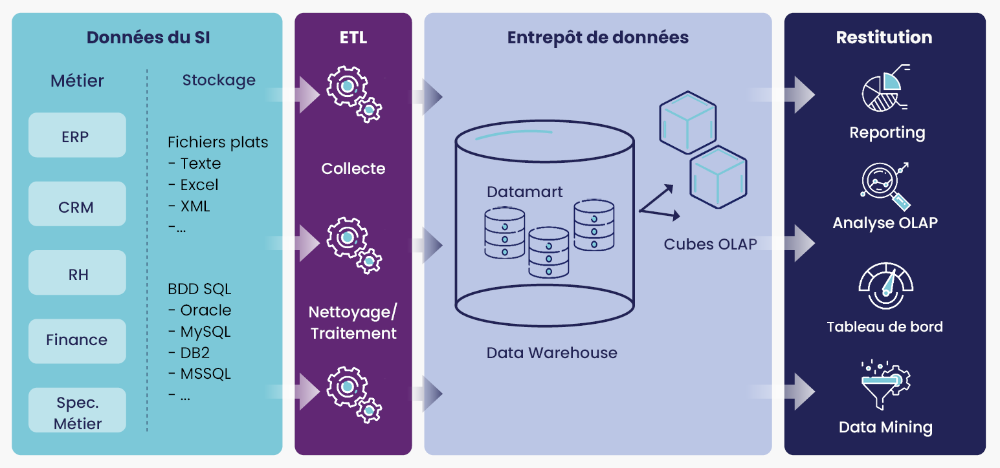

Modélisation de données simulées et création d'un tableau de bord interactif pour l'analyse du comportement des clients.
1. Contexte
Dans ce projet académique, j'ai eu l'opportunité de collaborer avec mes camarades de classe pour répondre à la demande de l'entreprise française de e-commerce Nil. Notre mission consistait à répondre à la demande de l'entreprise française de e-commerce Nil, qui souhaitait une analyse approfondie du comportement des utilisateurs sur sa plateforme en ligne. Pour cela, nous avons entrepris la création d'un modèle relationnel, basé sur plusieurs tables de dimensions et de faits, dans le but de structurer les données de manière cohérente et de faciliter leur compréhension en nous appuyant sur nos connaissances acquises en système d’informations décisionnels.
2. Livrables, outils et logiciels
Les livrables de ce projet comprenaient un modèle relationnel détaillé, une base de données construite en utilisant SQLite, et un tableau de bord interactif que j'ai créé avec Power BI. J'ai également rédigé des requêtes SQL pour extraire des données et obtenir des mesures pertinentes pour l'analyse du comportement des utilisateurs. J’ai également rédigé un rapport détaillé accompagnant les livrables, mettant en lumière les choix de conception, les étapes du processus de modélisation et les analyses effectuées.
3. La démarche et les résultats

Le modèle relationnel en flocon a permis une organisation efficace des données, facilitant ainsi l'analyse approfondie du comportement des utilisateurs. Les tables de dimensions telles que Livre, Auteur, Catégorie, etc., ainsi que des tables de faits comme Commande et Navigation ont été soigneusement sélectionnées pour répondre aux besoins spécifiques de l'entreprise Nil. J’ai également identifié et traité les dimensions douteuses, causales et dégénérées, assurant ainsi la qualité et la cohérence des données. Enfin, j’ai déterminé la granularité appropriée pour les tables de faits, et choisi le type de gestion des changements adéquat pour chaque table, garantissant ainsi l'intégrité et la pertinence des données au fil du temps.

Le tableau de bord que j'ai conçu offre une vision claire et intuitive des tendances et des comportements des utilisateurs sur la plateforme de Nil. Il permet notamment de suivre l'évolution du nombre de nouveaux utilisateurs au fil du temps, de comprendre les caractéristiques des livres les plus appréciés par les utilisateurs, ainsi que d'identifier les pages les plus visitées sur la plateforme. Télécharger le Tableau de bord
4. Les compétences acquises
Ce projet m'a permis de mettre en pratique les connaissances acquises en système d'informations décisionnelles. La conception du modèle relationnel, la manipulation des données à l'aide de SQL et R, ainsi que la création du tableau de bord avec Power BI, ont renforcé mes compétences dans ces domaines. De plus, la collaboration étroite au sein de l'équipe a favorisé l'apprentissage mutuel et la résolution efficace des problèmes rencontrés. En somme, ce projet a été une expérience enrichissante qui m'a permis de développer mes compétences techniques et ma capacité à travailler en équipe sur des projets complexes de BI.